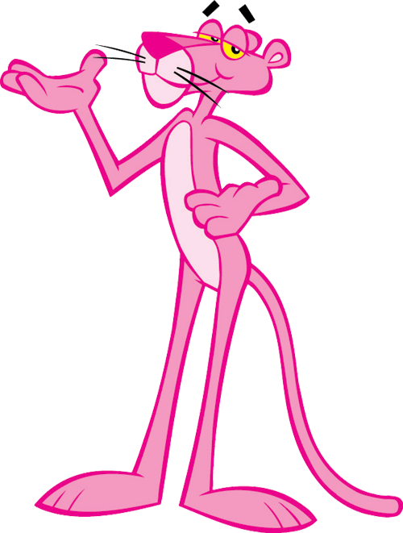

Los gatos han acompañado a la humanidad desde hace miles de años pero, a diferencia de los perros...ellos nos domesticaron

A su vez los gatos han sido una fuente de inspiración para numerosas historias de todo tipo
Arte inspirado en michis
Sin ningún orden en particular
- Música
- Pinturas
- Poemas
- Películas
- Cuentos
Nombres más populares para un gato
- Luna
- Salem
- Félix
- Simba
Tres gatos que marcaron mi infancia
Plutón La Pantera rosa Mino y su pandillaPlutón
Proveniente de un cuento de Edgar Allan Poe, este gato me causó una sensación de temor a los ocho años
Recuerdo que me pareció increíble la manera en la que su presencia atormentaba a su dueño ya que le recordaba el mal que había hecho.
Lo que nunca olvidaré es el escalofrío que recorrió mi espalda cuando llegué al final de la historia
Puedes leer la obra aquí
La Pantera Rosa
Si bien técnicamente no es un gato, es un felino y una de mis caricaturas favoritas
Su icónica introducción estilo jazz, los capítulos cortos y divertidos, y el hecho de que no hubiera diálogos hicieron que esta serie creada en 1963 me gustara tanto que, a los seis años, le pedí a mi mamá una fiesta de cumpleaños temática de la pantera rosa
Mino y su pandilla
Mino es un gato negro co-protagonista de la novela infantil "Ladridos y Conjuros" escrita por Verónica Murguía en 2005
La novela, situada en el Parque San Lorenzo de la Ciudad de México, retrata la legendaria enemistad entre perros y gatos, siendo Mino, un gato negro que tiene la habilidad de volverse invisible y hacer magia, el líder del bando gatuno que se enfrenta a Mago, un perro labrador y sus amigos. Sin embargo, tras una serie de eventos misteriosos ambos bandos deciden establecer una tregua para poder resolver el misterio del Parque San Lorenzo.
Le guardo un especial cariño a este libro porque fue de mis primeros libros "para grandes" y recuerdo la emoción que me causó leerlo ya que el parque San Lorenzo queda bastante cerca de mi casa, fue inreíble leer una historia que se desarrollaba a tan sólo unas cuadras de mi casa
Aquí hay un artículo sobre el Folklor gatuno
Y si das click en la siguiente imagen te llevará a un artículo de Wikipedia sobre Felis silvestris catus es decir: Gato común

¿Tienes gato? Si tienes más de uno, escoge uno solamente
¿Cuál es su nombre?
¿Tu michi es cachorro (2 años o menos) o adulto?
¿Cómo describirías a tu gato? Puedes escoger más de una opción